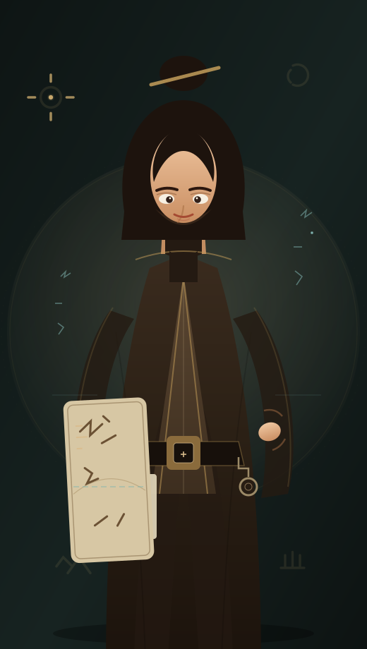
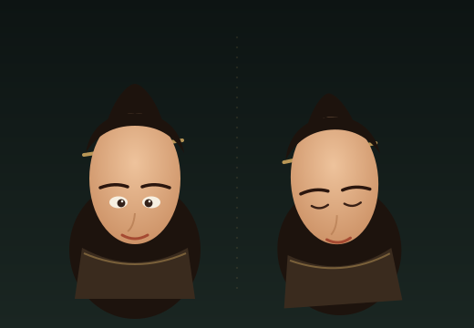
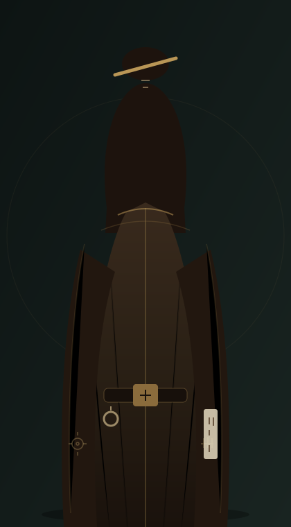
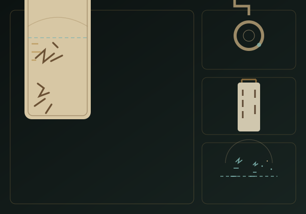

Digital Humanities · Oracle Bone Script · Vector Concept
殷契拾文 · 甲骨文数字史官 矢量概念板
数字人文项目核心虚拟角色设定 · 古文字数字讲解员 / AI 甲骨文知识助手。
本地代码矢量稿，不使用 AI 生图或外部素材；可在 Figma 中直接导入 SVG 二次排版。
角色：甲骨文数字史官
气质：博学 · 沉稳 · 克制 · 温润
版本：Vector v0.2
非 3D 模型 · 非 AI 写实渲染

悬停/自动演示

Expression · 半身肖像与表情沉静 / 温和颔首

Back & Costume · 背面与服装结构袍面 / 束腰 / 佩饰

Props & Tech · 道具与科技图例档案牌 / 玉佩 / 全息元素
说明：本板为本地代码矢量概念稿（Vector v0.2），代表角色比例、服饰层次、道具与克制数字科技元素的
视觉基准；不冒充 AI 写实渲染或最终 3D 模型。SVG 源文件位于同目录 vector/，可导入 Figma 继续排版。
若后续生成 AI 写实图，将替换为 board-ai-raster.html 模板。